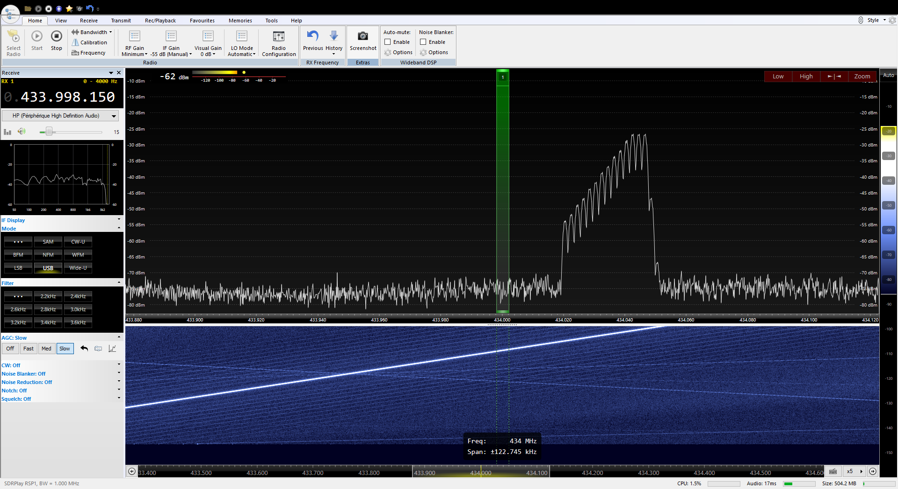
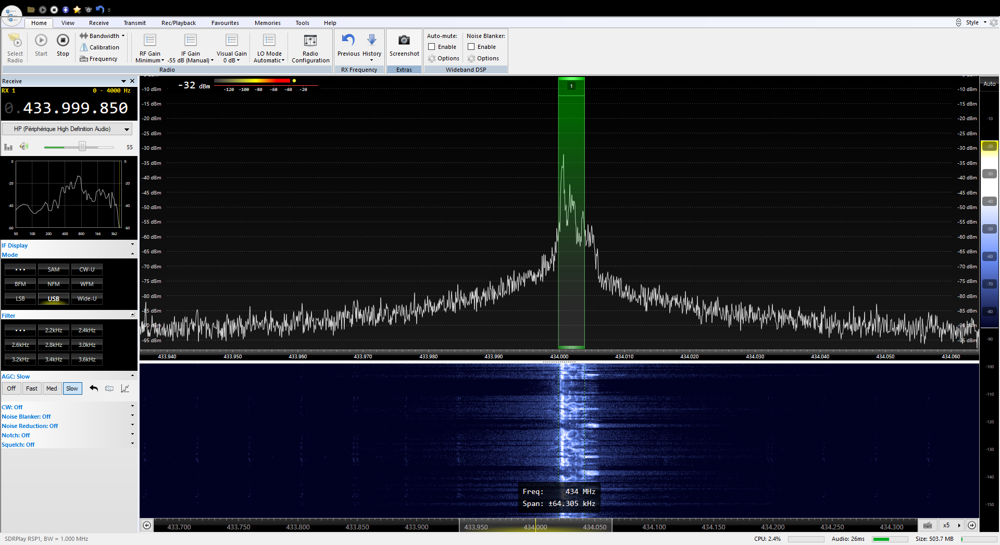

火腿手中的树莓派
BG1REN
简单说说树莓派……
A small and affordable computer that you can use to learn programming
树莓派 Raspberry Pi

-
小身材
名片大小，轻松进口袋
85.60mm x 53.98mm x 17mm -
价格便宜
某宝价裸板200冒头
加外壳、存储卡也不到300元 -
量又足
功能强大接口全
64位4核1.4G CPU、1G RAM、LAN、WiFi、蓝牙、USB、HDMI、GPIO……
Raspberry Pi 3 Model B+
Raspberry Pi 3的最新型号
- 处理器： ARMv8 4核 1.4GHz
- 内存： 1GB LPDDR2 SDRAM
- 无线： 2.4GHz/5GHz Wireless LAN，蓝牙4.2/BLE
40脚GPIO、千兆网、HDMI、4个USB 2.0、CSI摄像头接口、DSI触屏接口、4线立体声和和视频口、MicroSD插座、5V/2.5A直流输入。通过PoE Hat可支持PoE。
Raspberry Pi 3 Model A+
B+的缩小版本
- 处理器： ARMv8 4核 1.4GHz
- 内存： 512MB LPDDR2 SDRAM
- 无线： 2.4GHz/5GHz Wireless LAN，蓝牙4.2/BLE
40脚GPIO、HDMI、1个USB 2.0、CSI摄像头接口、DSI触屏接口、4线立体声和和视频口、MicroSD插座、5V/2.5A直流输入。

Raspberry Pi Zero
最小的树莓派，像个大U盘。
- 处理器： 单核 1GHz
- 内存： 512MB RAM
Mini HDMI口、MicroUSB OTG口、MicroUSB供电、40脚GPIO、视频口、CSI摄像头接口。

Raspberry Pi Zero W
Raspberry Pi Zero的增强型。
- 无线网： 802.11 b/g/n wireless LAN
- 蓝牙： 蓝牙4.1、BLE
其他和Raspberry Pi Zero一样。

Linux with GUI
大多数情况下，树莓派运行Linux操作系统。
Raspbian是官方支持的Linux发行版，兼容性最好。可以用NOOBS安装。
常用软件都可从软件仓库中直接下载安装。
此外，还有大量的第三方发行版，例如Ubuntu Mate、Snappy Ubuntu Core、ArchLinux等。甚至还能运行Windows 10 IoT Core。

当常规电脑用
插入存有操作系统的MicroSD卡
连接HDMI显示器
接入USB键盘和鼠标
通过MicroUSB供电


火腿的第一个树莓派实验
FM发射机


现在就试试！
请将手台调整到 438.700 MHz
准备收听……
“Houston, we have a problem.”
APOLLO 13
RPiTx项目
RPiTx将树莓派变成一个通用的射频发射器。
开源，目前是第2版，Star数1121，项目处于活跃状态。
主要用于射频系统的教学。
https://github.com/F5OEO/rpitx
RPiTx项目（续）
使用树莓派内置的PLL（锁相环）模块。
在GPIO-04生成射频信号。
支持的频率范围：5KHz至1500MHz。
为了避免造成干扰，需加滤波器。此外无需其他硬件。
https://github.com/F5OEO/rpitx
RPiTx - Tune

RPiTx - Chirp
RPiTx - Spectrum
RPiTx - FM with RDS

RPiTx - SSB
RPiTx - SSTV

RPiTx - POCSAG (pager mode)

RPiTx - Freedv (digital voice)

RPiTx - Opera (Beacon)
我们加点难度，继续折腾……
10mW功率 超越9000公里
树莓派变身WSPR信标台
WSPR - Weak Signal Propagation Reporter
发音：whisper
用于火腿之间的弱信号通讯的协议和程序
查看Spots：http://wsprnet.org/
最初由K1JT设计编程
大牛K1JT - Joe Taylor
诺贝尔奖得主
FT8、JT系列、MSK144、WSPR……
WSJT-X
接上真正的天线
运行WSPR软件
树莓派变身WSPR信标台
10 mW功率有多小？
LED：20～40 mW
LED正向压降约2V，电流10～20mA。
识别10,000公里处的一颗LED
给树莓派接上天线后……
我们再来加点什么？
插个便宜的电视棒
树莓派变接收机
试试简单的转发器
上行：438.700 MHz
下行：145.100 MHz
rtl_sdr -s 250000 -g 35 -f 438.7M -p 59 - | buffer | \ sudo ./sendiq -s 250000 -f 145.1e6 -t u8 -i -
接收NOAA气象卫星的云图
显示频谱
接X5105的IF输出
大屏显示频谱！
接CIV控制电台
……
电视棒玩够了，能不能玩点值钱的家伙？
带着树莓派去架台
不再需要背电脑
我的野外架台方案
便携持久能数传
协谷X5105：内置电池、天调强大
DP、GP线天线：便携
USB CIV线：控制电台
CE19：AF in/out
USB声卡：AF in/out
树莓派：WSJT-X、FlDigi
移动电源：给树莓派供电
手机：网络热点、访问终端
蓝牙鼠键（可选）：操控体验
磷酸铁锂电池（可选）：更持久
X5105、CE19和CIV线
用手机当树莓派终端
开启手机WiFi热点
树莓派连接手机WiFi热点
打开手机上的VNC客户端，连接树莓派
通过手机屏幕操作树莓派
或用蓝牙键盘鼠标

一些体会
期待更好的体验
USB声卡用CM108就行
X5105的PTT用CIV命令
可用USB HUB来连接声卡和CIV控制线
蓝牙键盘鼠标比手机触屏的体验强
X5105没有VOX，有的软件没法用
希望能通过音频控制CW Keying
连线还是比较多，能简化就更好了
做一个All in One的树莓派模块
BG3MDO的Ham Pi项目
用于Echolink、APRS、中继逻辑控制或远程电台 —— 项目介绍在这里
最近业余时间做了个树莓派的扩展板，一个树莓派的通用电台接口板（用于Echolink, APRS, 或者中继逻辑控制, 或远程电台）。
板子跟树莓派一样大，只是向后平移了一点让出了USB和网口，板子已经开槽方便连接树莓派官方显示屏和相机。
BG3MDO的Ham Pi项目
树莓派的通用电台接口板
实时时钟RTC
96K 24bit声卡
2路12bit ADC
温度传感器
1路固态 55V 1A 继电器
标准串口，带有RTS和CTS
高速光耦隔离的PTT和SQL控制
WSJT-X on Ham Pi (JT65)
FlDigi on Ham Pi (RTTY)
BG3MDO的Ham Pi项目
BG3MDO的Ham Pi项目

BG3MDO的MMDVM项目
多模式数字语音调制解调器 —— 项目介绍在这里
MMDVM全称多模式数字语音调制解调器，它是一个涉及硬件和软件的业余无线电数字通信项目。
MMDVM支持目前所有的常规数字模式，例如ICOM的DSTAR, 摩托罗拉海能达的DMR，八重洲的Fusion C4FM 以及 P.25制式数字对讲。
MMDVM主板可以用以将模拟电台，中继转换为全数字模式电台或者中继台，也可以实现数字中继模式转换，例如使得八重洲C4FM中继支持摩托的DMR。
MMDVM hotspot 热点主板自带射频，他可以实现数字语音网关功能，只需要额外一个对讲机或者车台就能组成互联网互联的数字对讲系统，通联全世界。
中继和热点可以相互连接，类似Echolink，由于是数字模式，其语音质量和可传递的信息远比模拟电台丰富的多。
MMDVM热点

BI3QXJ的外接小屏项目
想法的由来
FT-891车载台，按键少
切换模式、功率等均需要长按，拧旋钮n次，操作不便
屏显有限
调试天线时需确认功率调到最小，调完要调大功率
发射时希望同时看多个仪表
做过树莓派控制Uniden BC125AT，LCD2004做显示，编程控制的感觉真好
BI3QXJ的外接小屏项目
行动
近些年的电台都支持电脑控制（CAT或CIV），那么给电台做个“线控”应该不难
考虑到未来可能外接声卡玩FT8，插RTLSDR做频谱，比较性能和扩展能力（USB*4、WIFI、BT），选定树莓派作为开发板
我需要触摸功能，开发简单，选择Pygame库实现界面
BI3QXJ的外接小屏项目
功能和开发计划
频率/模式
功能开关：IPO、ATT、AGC、NB、NR、MON等
仪表：可同时展现所有仪表
简易频谱，天分：通过轮询频率，绘制S/SWR表曲线
无数种可能
外接声卡：录音/回放/自动呼叫，各种模式解码
外接SDR：频谱
外接GPS：实时位置+授时
接入网络：上传通联记录，获取hamqsl传播预报，远程控制
感谢
BH1TTE BG3MDO BI3QXJ
提供文字、照片、视频
BG8HT
授权使用协谷的产品图片
TNX de BG1REN